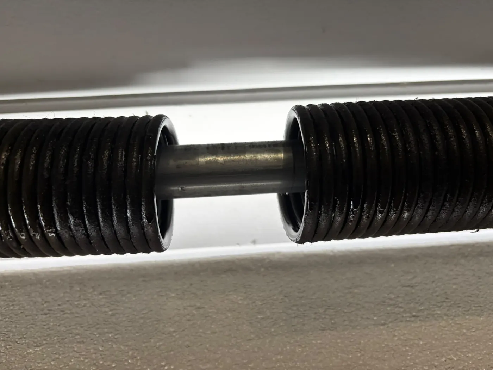

Signs your garage door spring is broken
- A loud bang from the garage, like a gunshot
- The door is suddenly very heavy, or only lifts a few centimetres
- The motor runs but the door doesn't move
- A visible gap in the spring above the door (sectional doors)
- The roller door drum spins loosely or the door drops fast

Why springs break in Perth
Springs are rated for a set number of open-and-close cycles, so busy households wear them out faster. Perth's hot summers and the salty air in coastal suburbs like Scarborough, Hillarys and Rockingham speed up wear and rust. A yearly service helps spot a tired spring before it snaps.
How we replace your spring
- Inspect the door and give you a fixed price to approve
- Safely release and remove the old spring
- Fit a correctly rated new spring (we replace in pairs when needed)
- Re-balance the door and re-test the opener's safety settings
- Lubricate and check rollers, cables and hinges
How much does spring replacement cost?
The price depends on your door type, size and spring rating. We inspect the door and give you a fixed price to approve before any work starts, with no call-out fee in Perth metro.
Can I fix a garage door spring myself?
Please don't. Garage door springs hold enough tension to cause serious injury. Leave the door closed, disconnect the opener, and call a technician.